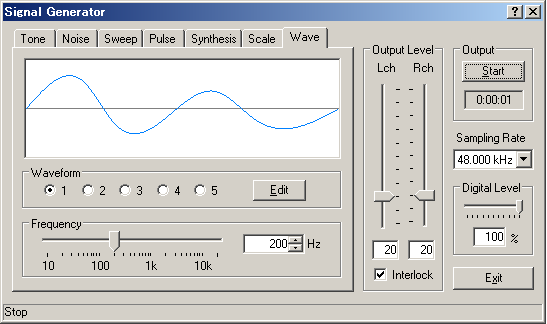
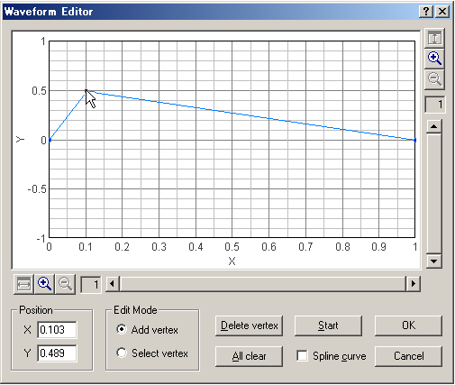

DSSF3 > RA > Reference Manual > Signal Generator

| Item | Description |
|---|---|
| Waveform | Select the stored waveform. Selected waveform is displayed above. |
| Edit | Open the waveform editor window. |
| Frequency | Set the frequency of the signal by moving the slider by entering the value. Edited waveform is generated in this frequency. |

| Item | Description |
|---|---|
| Graph area | One period of the waveform is displayed. X axis is a relative time, and Y axis is amplitude. Vertical and horizontal axes can be zoomed up to x512 respectively. |
| Position | Position [X, Y] of the selected vertex is displayed. |
| Edit Mode | Add vertex: Check this and click on the graph to add a new vertex. Select vertex: Check this and click on the graph to select a vertex. Selected vertex is shown in a red point. Position of the vertex can be changed by dragging on the graph or by entering X, Y positions. |
| Delete vertex | Click this button to delete a selected vertex. |
| All clear | Click this button to delete all vertices. |
| Start | Click this button to start generating the currently edited waveform. Its waveform can be observed by the oscilloscope or the FFT analyzer. |
| Spline curve | Mark this checkbox to create a spline curve that interpolates vertices. |
| OK | Click this button to store the waveform. |
| Cancel | Click this button to do nothing and go back to the signal generator. |
DSSF3 > RA > Reference Manual > Signal Generator